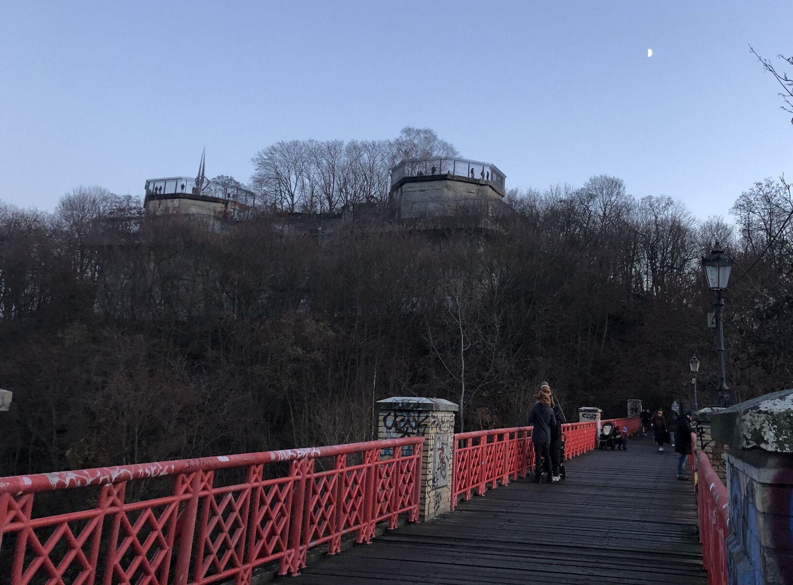

High School
- I graduated from the Abrahm Lincoln School in Colombia
Volunteer Program
- I had the opportunity to help homeless people in Dublin, Irland with the institution Dublin Simon Community
Studienkolleg Comenius Kolleg

Before starting my Studienkolleg, I've had eight months to absolve a B2 German level. In order to accomplish my goal, I planed a 6 hours per day studying plan in Berlin. Thanks to the demanding process, I was availble to start my Studienkolleg in August 2021
I'm currently studying a pre-universitary program in order to expand my personal and professional skills.